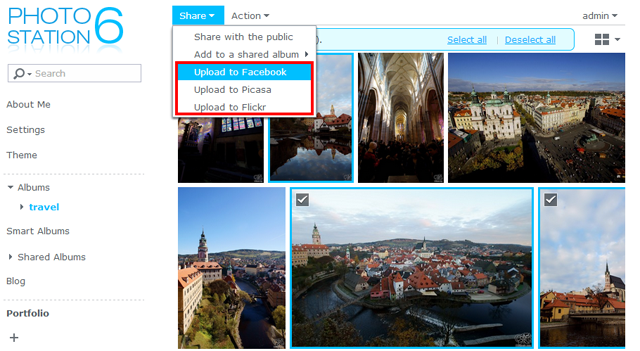

Genel Bakış
Photo Station, Synology NAS'ınızda kayıtlı olan fotoları internet üzerinden düzenlemenize ve görüntülemenize yardım edecek şekilde tasarlanmıştır. Tanımlanan ve kullanıcı dostu arayüzü ile, Photo Station foto albümlerinizi sadece birkaç tıkta yüklemenize, gözatmanıza, yönetmenize ve paylaşmanıza olanak sağlar.
1. Photo Station'ı Yükleyin
Photo Station yüklemek için, lütfen Paket Merkezi'ne gidin, Photo Station'ı bulun ve ardından Yükle üzerine tıklayın.

2. Fotoğraf Yükle
Fotolara Photo Station'da gözatmadan ve yönetmeden önce, albümleri oluşturmanız ve fotoları ilk olaral aşağıdaki yöntemlerden birini kullanarak oluşturmanız gereklidir.
2.1 Fotoları Photo Station Uploader'a yükleyin (Windows ve Mac için)
Photo Station Uploader'ı kullanmanızı öneririz, çünkü yükleme sürecinde gösterilecek her fotonun küçük resimleri oluşturulacaktır. Dosyaları Photo Station Uploader ile yüklemek bilgisayarınızın işlem yeteneğini yükselterek dönüşümü hızlandıracaktır.
- Photo Station Uploader'ı indirin ve yükleyin (Synology's Download Center'da vardır).
- Bilgisayarınızda, yüklemek istediğiniz herhangi bir fotoya sağ tıklayın ve sihirbazı açmak için Photo Station'a Yükle > Yeni profil oluştur öğesini seçin.
- Kendi seçtiğiniz bir adı ve yeni profil için hedef Synology NAS'ın sunucu adını/IP adresini girin.
- Dosyaları Photo Station veya Kişisel Photo Station'dan birine yükleyip yüklemiyeceğinizi seçin.
- Hedef Synology NAS için kullanıcı bilgilerini girin.
- Gözat üzerine tıklayarak hedef klasörü seçin veya photo paylaşılan klasöründe bir alt klasör oluşturun.
- Yükleme tamamlandığında, Photo Station'ı Synology NAS'ınızda başlatabilir ve yüklediğiniz dosyaları çeşitli modlarda görüntüleyebilir veya albüm özellikleri ve erişim öncelikleri gibi diğer bilgileri düzenleyebilirsiniz.

Sağlanan sunucu bilgisi ve kullanıcı bilgileri ileride kullanmak için bu profile kaydedilecektir. Farklı kurallara veya hedeflere göre birkaç profil ayarlayabilirsiniz. Sunucu bilgilerini tekrar doldurmak yerşine, bir sonraki sefere Photo Station Uploader'ı kullanın, mevcut bir profili seçebilir ve fotoları aynı hedefe yüklemek için yapılandırma ayarını önceden kullanabilirsiniz.

2.2 Albümleri oluşturun ve fotoları Photo Station üzerinden yükleyin
Photo Station'ı başlatın ve Ekle üzerine tıklayarak yeni bi albüm oluşturun veya fotoları bilgisayarınızdan veya Synology NAS'dan mevcut albümlere yükleyin.

Eğer fotoları Photo Station arayüzünü kullanarak yüklemek isterseniz, QuickConnect servisinin etkinleştirilmesi önemle tavsidye edilir. İster evde olun ister dışarıda QuickConnect, iletme kuralları gibi karmaşık ağ yapılandırmaları kurulumunu yapmanıza gerek kalmadan özel ID kullanaral Synology NAS ve Photo Station'a internet üzerinden istediğiniz yerden giriş yapabilmenize olanak sağlar. QuickConnect hakkında ayrıntılı bilgi için, lütfen bu kılavuza bakınız.
3. Fotoğraf Paylaş
Paylaşım özelliği ile,Photo Station'a kaydedilen fotoları arkadaşlarınız ile kolaylıkla paylaşabilir veya fotoları Facebook, Picasa ve Flickr gibi sosyal ağlara yükleyebilirsiniz.
3.1 Fotoları genel paylaş
- Bir albüme göz atın ve paylaşmak istediğiniz fotoları seçin.
- Paylaş > Herkesle paylaş üzerine tıklayarak linki alın.
- Eğer paylaşacak bir foto seçtiyseniz, video Paylaşılan Fotolar adındaki varsayılan paylaşılan albüme eklenecektir. Burada, paylaştığınız tüm fotoları birer birer yönetebilirsiniz.
- Eğer paylaşacak birden fazla foto seçtiyseniz, fotolar yeni paylaşılan albüme gruplanacaktır.
- Alternatif olarak, aynı zamanda Paylaş > Paylaşılan albüme ekle üzerine tıklayarak seçtiğiniz fotoları mevcut paylaşılan albüme ekleyin (varsa).
- Yeni paylaşılan albüme bir ad verin ve gerekirse bir geçerlilik süresi belirleyin.
- Linki kopyalayıp epostalara, anlık mesajlara ve web sayfalarına yapıştırarak fotoları herkes ile paylaşmaktır.

- Paylaşılan tüm fotolar linke sahip herhangi bir kişi tarafından genel olarak paylaşılmalıı.
- Hangi kullanıcıların Photo Station öğelerini Ayarlar > Paylaşma üzerinden herkesle paylaşma önceliğine sahip olacaklarını belirleyebilirsiniz.
3.2 Fotoları sosyal ağlar ile paylaşın
- Karşıya yüklemek istediğiniz fotoğrafları seçin ve ardından Paylaş > [Sosyal ağ web sitelerine] karşıya yükle'yi seçin. 
- Beliren pencerede, [Sosyal ağ web siteleri] ile bağlan'a tıklayın ve ardından sosyal ağ hesabınızla yetkilendirin. Fotoları yeni veya mevcut albüme yüklemek için seçebilrsiniz.
4. Fotoları Mobil Cihazlarda Düzenleyin ve Gözatın
Photo Station'a bağlanmak veya fotoları mobil cihazları kullanarak yüklemek için, aşağıdaki QR kodları ile birlikte mobil cihazlarınıza DS photo+'ı yükleyebilirsiniz.